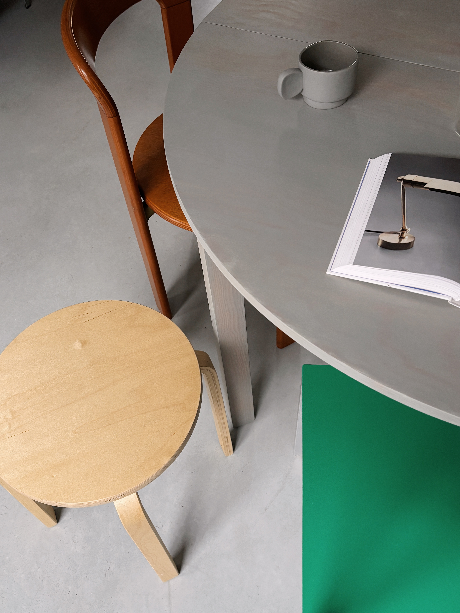
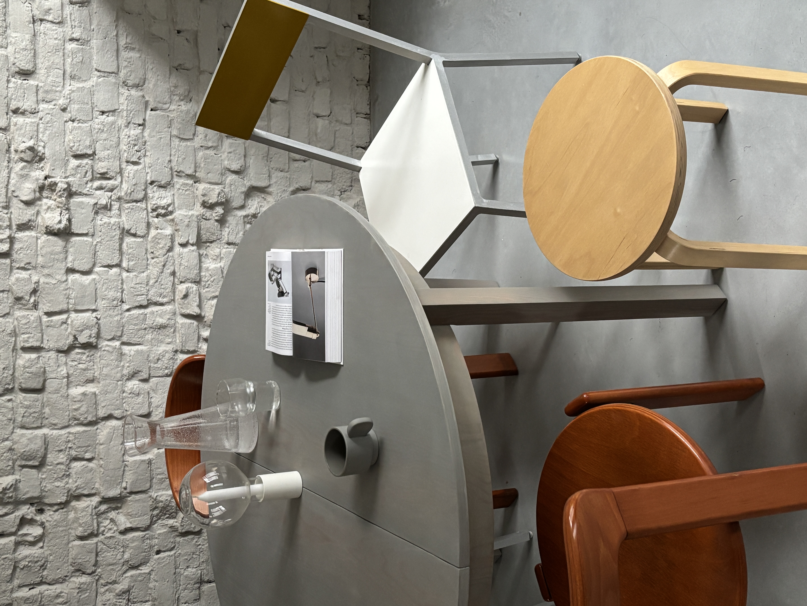
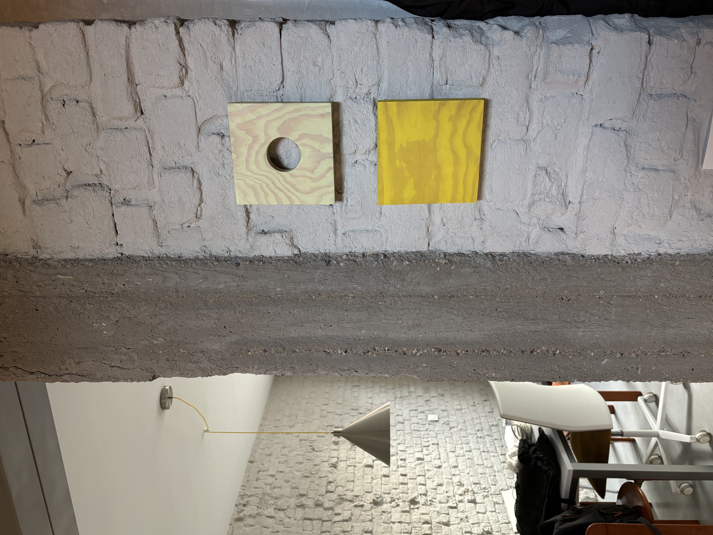
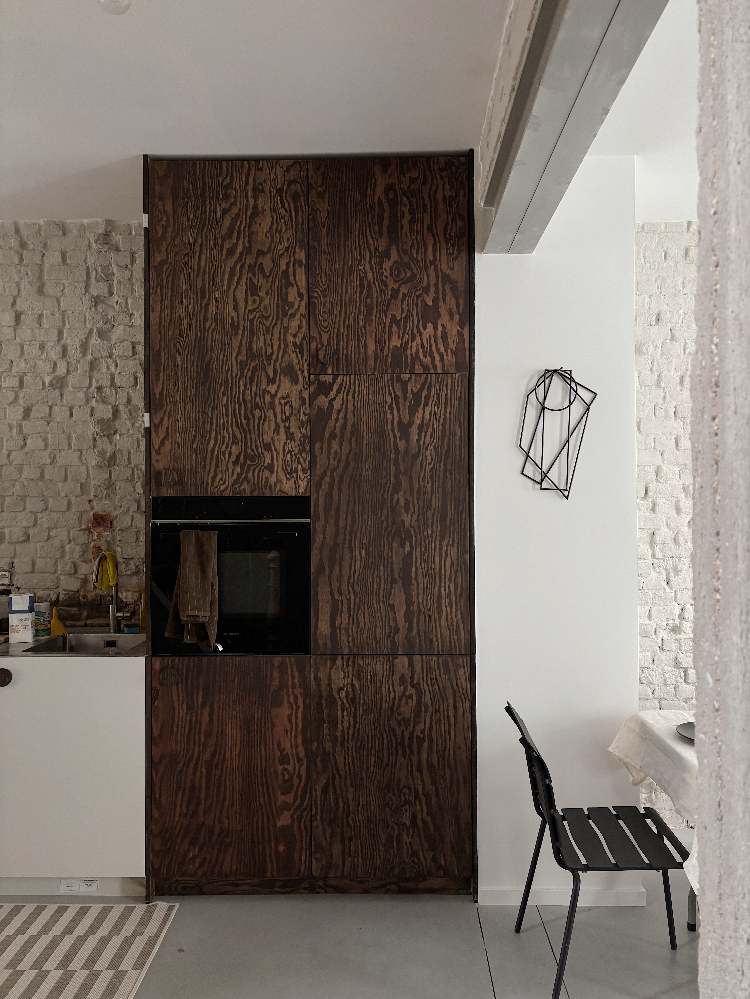

Mass Object I
2023




A monolithic form carved from solid basalt. Mass Object I is a meditation on weight and presence — an elemental sculpture that commands space through sheer material density and the contrast between rough-hewn and polished surfaces.
- Materials
- Basalt
- Dimensions
- 40 × 40 × 60 cm
- Category
- Sculpture
Price on Request
Inquire About This Piece →